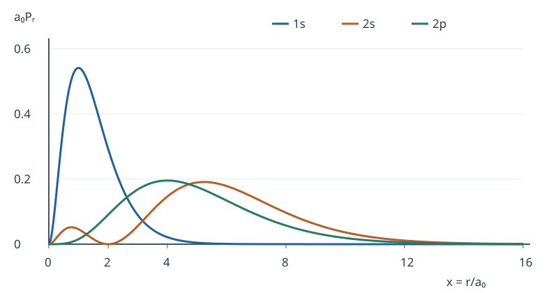

17.8 氢原子
本节把前面的定态方程、角动量和测量规则用在同一个体系中：先求电子的空间状态，再加入自旋。目标是能说明每个量子数的来历，读懂电子云，并正确计算球壳概率与磁矩。
核对范围：已对照教材纸291—299页；下面推导和解答为独立整理，径向与角向归一化、基态概率、例17-12的期望值已独立复算。未见出版社答案。
一、先说清楚采用的模型
取质子位置为原点，令 e>0 表示元电荷大小，电子电荷为 −e。忽略核运动、相对论、自旋与轨道的耦合、外场等修正时：
Ĥ=−ℏ²∇²/(2mₑ)−κ/r， Ĥψ=Eψ。
这是非相对论、固定核的库仑模型。若处理电子和质子的相对运动，先分离质心，再用约化质量 μ=mₑmₚ/(mₑ+mₚ) 替换以下所有 mₑ；不能只在某一条公式中随意替换。真实光谱还有更细的修正，不能把本节的能级简并当成任何精度下都成立。
势能只依赖 r，因此用球坐标最方便。体积元为 dV=r²dr sinθdθdφ=r²dr dΩ。利用上一节的球坐标角动量算符：
Ĥ、L̂²、L̂z 两两对易，可以选它们的共同本征态。写 ψ(r,θ,φ)=R(r)Y(θ,φ)，先解角向本征方程，再把角动量本征值放进径向方程。一般叠加态不一定同时具有确定的这三个量。
二、角向部分：l 和 m 从哪里来
L̂zYₗₘ=−iℏ∂Yₗₘ/∂φ=mℏYₗₘ。
第二式先给出 φ 方向因子 eimφ。绕一周后空间波函数必须单值，即 e2πim=1，所以这里的轨道量子数 m 为整数。再要求 θ=0、π 两极处规则、全角域可归一，得到 l=0,1,2,…，m=−l,…,l。半整数自旋的两分量态另在后面引入，不是上述标量球谐函数。
角函数叫球谐函数 Yₗₘ。以下采用常见相位约定，Yₗ,−m=(−1)mY*ₗₘ；单个本征函数的整体相位不影响其位置概率。
Y₀₀=1/√(4π)，
Y₁₀=√[3/(4π)]cosθ，
Y₁₁=−√[3/(8π)]sinθ eiφ，
Y₁,−1=√[3/(8π)]sinθ e−iφ。
教材表中的 d 态角函数及如何检查归一化
Y₂,±1=∓√[15/(8π)]sinθcosθ e±iφ，
Y₂,±2=√[15/(32π)]sin²θ e±2iφ。
例如 Y₁₀：∫|Y₁₀|²dΩ=(3/4π)·2π∫₀πcos²θ sinθdθ=(3/2)·(2/3)=1。不能漏掉体积元里的 sinθ，也不能把函数本身的正负当作概率的正负。
L 的大小为 √[l(l+1)]ℏ，z 分量为 mℏ。比如 l=2，大小为 √6ℏ，z 分量有 −2ℏ、−ℏ、0、ℏ、2ℏ 五个测量值。画出的方向示意表示量子化分量，不能理解成电子绕核的经典轨道或同时确定的三个角动量分量。
对单个复球谐函数 Yₗₘ，|eimφ|²=1，角密度绕 z 轴对称。但 pₓ、pᵧ 是 m=±1 的线性组合，密度可依赖 φ；因此并非所有氢原子态的电子云都绕 z 轴对称。s、p、d、f 分别对应 l=0、1、2、3。
三、径向方程如何给出能级
把 ψ=RY 代入方程并用 L̂²Y=l(l+1)ℏ²Y，得到：
+[2mₑ(E+κ/r)/ℏ²−l(l+1)/r²]R=0。
令 u(r)=rR(r)，可去掉一阶导数：
Veff(r)=−κ/r+ℏ²l(l+1)/(2mₑr²)。
第二项叫离心势垒。它来自三维角运动的数学分离，并非再加了一种相互作用。对束缚态 E<0，要求原点处物理解规则、u(0)=0，并在无穷远衰减到可归一。把这些边界要求同时满足，能量才会离散。
从衰减因子到量子化：不跳过关键一步
定义 a₀=ℏ²/(mₑκ)，b=√(−2mₑE)/ℏ，ρ=2br，ν=1/(ba₀)。大 r 时 u″≈b²u，取衰减的 e−ρ/2；原点规则解有 u∝rl+1。因此令 u=ρl+1e−ρ/2F(ρ)，代入消去已知项：
令 F=Σⱼcⱼρʲ，逐次幂比较，得 cⱼ₊₁=(j+l+1−ν)cⱼ/[(j+1)(j+2l+2)]。通常不截断的规则级数会产生增长分量，破坏无穷远归一化；必须在 j=k≥0 时分子为零，使 F 成为 k 次多项式。于是 ν=k+l+1=n 为正整数，且 l≤n−1。由 b=1/(na₀) 得下式。
a₀≈5.29×10⁻¹¹m， n=1,2,…。
主量子数 n 决定本模型的能量；l 和 m 决定同一能级内不同的空间形状与角动量。只谈束缚态时用上式，E≥0 的散射态属于连续谱，不能继续套用正整数 n 的束缚能级公式。
需要实际代入波函数时：通式、约定和低阶结果
记 ρ=2r/(na₀)，采用广义拉盖尔多项式 Lkα(ρ)=Σⱼ₌₀k(−1)ʲ C(k+α,k−j)ρʲ/j!。在这个定义下：
×e−ρ/2ρˡLn−l−12l+1(ρ)。
教材采用的缔合拉盖尔多项式定义和前因子写法不同；必须连同其定义使用，不能把一种定义的多项式与另一种定义的归一化常数混用。下表直接给可代入的函数，x=r/a₀，每项右边还要乘 a₀−3/2。
| n,l | a₀3/2Rₙₗ |
|---|---|
| 1,0 | 2e−x |
| 2,0 | (2−x)e−x/2/(2√2) |
| 2,1 | xe−x/2/(2√6) |
| 3,0 | 2(27−18x+2x²)e−x/3/(81√3) |
| 3,1 | 4x(6−x)e−x/3/(81√6) |
| 3,2 | 4x²e−x/3/(81√30) |
归一化条件是 ∫₀∞|Rₙₗ|²r²dr=1。同一个 l、不同 n 的径向函数按这个权重正交；不同 l 的径向函数本身不必正交，它们的完整空间态由角函数保证正交。上表六个函数均已另用数值积分核验归一化为1。
先列允许量子数：l=0 时 m=0；l=1 时 m=−1,0,1。所以空间态为 (l,m)=(0,0)、(1,−1)、(1,0)、(1,1)，共4个。一般 n 下，Σₗ₌₀n−1(2l+1)=n²。加入两种自旋后有 2n² 个状态，n=2 时为8个；能量完全简并是在本节忽略精细修正的模型中成立。
四、位置密度与径向概率：少一个或多一个因子都不行
位置密度 |ψ|² 的单位是 m⁻³，乘 dV 才是概率。若只问“半径在 r 到 r+dr”，须把所有方向加起来。已取角归一化 ∫|Y|²dΩ=1，因此：
=r²|R(r)|²dr，
Pᵣ(r)=r²|R(r)|²， ∫₀∞Pᵣdr=1。
教材核对提示：纸295页在此前已经给出上述角向、径向归一化，却把球壳概率写成 4πr²|Rₙₗ|²dr。按该处 R 的定义，多了4π：积分将成为4π而不是1。若用球对称的完整波函数 ψ，例如 ψ₁₀₀=R₁₀/√(4π)，才可写 dP=4πr²|ψ₁₀₀|²dr。区分 R 与 ψ 就能消除矛盾。
Pᵣ=4r²e−2r/a₀/a₀³。
- 完整密度 |ψ|² 随 r 递减，在原点最大；但恰在一个点测到位置的概率仍为0，须给有限体积。
- 径向密度中还有球壳大小 r²。Pᵣ′=(8r/a₀³)e−2r/a₀(1−r/a₀)，因此在 r=a₀ 达极大，不是 r=0。
- 令 x=r/a₀，P(r≤a₀)=∫₀¹4x²e−2xdx=[−(2x²+2x+1)e−2x]₀¹=1−5e⁻²≈0.3233。
- 平均半径 ⟨r⟩=a₀∫₀∞4x³e−2xdx=3a₀/2，与最可能半径 a₀ 不同。
用到 ∫₀∞xⁿe−αxdx=n!/αⁿ⁺¹（α>0）。归一化检验给 4·2!/2³=1；这也能独立检查球壳因子。电子没有因此获得一条半径 a₀ 的圆轨道。

对本征态，径向节点数（不计 r=0 与无穷远）为 n−l−1；角节点结构由 Y 决定。|R|²、|Y|² 的零点不是“电子一定沿另一条线走”的证据，而是测量位置的概率分布特征。
五、电子自旋：状态多了一个内部自由度
原子光谱精细结构以及非均匀磁场中的束流分裂提示，仅有空间波函数还不够。电子具有内禀角动量 S，叫自旋。它不是把电子当作有大小的带电球，再让球面按经典力学转动。
Sz=mₛℏ，mₛ=±1/2，
[Ŝₓ,Ŝᵧ]=iℏŜz（循环成立）。
自旋大小为 √3ℏ/2，而选定轴的投影只有 ±ℏ/2。两种投影态可记 χ₊=(1,0)ᵀ、χ₋=(0,1)ᵀ，二者正交归一；Ŝz=(ℏ/2)diag(1,−1)。自旋由两分量描述，不能用 r×p 构造出来。每个自旋分量算符的平方均为 ℏ²I/4。
轨道与自旋磁矩都要记住电子带负电：
μS=−gₛμBS/ℏ，gₛ≈2，
μB=eℏ/(2mₑ)。
所以 μLz=−mμB，μSz≈−2mₛμB。不要把自旋磁矩也乘成轨道的系数，更不要把投影符号写反。gₛ=2 是本节近似，并非无限精度的数值。
本节 Ĥ 不含自旋，与 Ŝz 也对易，因此可选共同态 ψₙₗₘₘₛ=RₙₗYₗₘχₘₛ，由 n,l,m,mₛ 四个量子数标记。电子的 s 固定为1/2，通常不另列。若加入自旋与轨道耦合，Lz、Sz 一般不再分别守恒，应换合适的共同量子数，不能原样沿用这里的全部结论。
六、教材例17-12：把系数变成概率，再求平均
手机可左右滑动下表查看完整结果。
题给归一化叠加态（以下下标依次是 n,l,m,mₛ）：
两基态的 m、mₛ 不同，互相正交。模平方为 1/4、3/4，和为1。对 Lz、Sz 和本题总磁矩 z 分量，它们也各有确定本征值，故直接按概率加权：
| 分支 | 概率 | Lz | Sz | μz≈−μB(Lz+2Sz)/ℏ |
|---|---|---|---|---|
| m=1，mₛ=+1/2 | 1/4 | ℏ | ℏ/2 | −2μB |
| m=0，mₛ=−1/2 | 3/4 | 0 | −ℏ/2 | +μB |
⟨Sz⟩=(1/4)(ℏ/2)+(3/4)(−ℏ/2)=−ℏ/4，
⟨μz⟩=(1/4)(−2μB)+(3/4)μB=μB/4
=eℏ/(8mₑ)。
结果检查：平均值位于两个可能结果 −2μB 与 +μB 之间。单次测量不是必得 μB/4；平均值也不必等于一个本征值。系数的相对负号不改变本题这些对角算符的测量概率，但对其他含非对角矩阵元的量，相对相位可能影响结果，不能一概删掉。
七、自测与章节衔接
1．3p态允许哪些量子数？含自旋共几个？
3p 指 n=3、l=1，m=−1,0,1。每个 m 有 mₛ=±1/2，合计6态；不是整个 n=3 壳层的18态。
2．若给 R₁₀=2a₀⁻³ᐟ²e⁻ʳ/ᵃ⁰，求球壳概率该乘什么？
乘 r²dr，因为 ∫|Y₀₀|²dΩ=1。若先组成 ψ₁₀₀=R₁₀/√(4π)，再乘球壳体积 4πr²dr，得到完全相同结果。两条路线不能混用。
3．基态 L=0，是否电子既无动能又没有角动量？
它的轨道角动量确定为0，但动能并非0；波函数仍有空间变化。电子还具有非零自旋大小 √3ℏ/2。轨道角动量、自旋、动能是不同的物理量。
4．一个本征态的电子云是否随时间旋转？
定态只多整体因子 e⁻ⁱᴱᵗ/ℏ，位置密度不随时间改变；m≠0 时仍可有概率流。不能把密度不变等同于电子沿经典轨道静止，也不能把复相位直接画成电子绕核轨迹。
复习顺序：先认模型范围，再用 n,l,m,mₛ 检查状态是否合法；问位置用 |ψ|²dV，问半径用 r²|R|²dr；问测量均值先找本征值和系数概率。能级、角动量、磁矩的单位分别是能量、ℏ、磁矩，最后用量纲和归一化再查一遍。
下一节进入全同粒子与泡利原理，解释多个电子时为何不能只把单电子态随意相乘。复杂势的近似计算分别放在非简并微扰论与变分法，本节不再重复一套讲解。完成本章后到习题17练习。